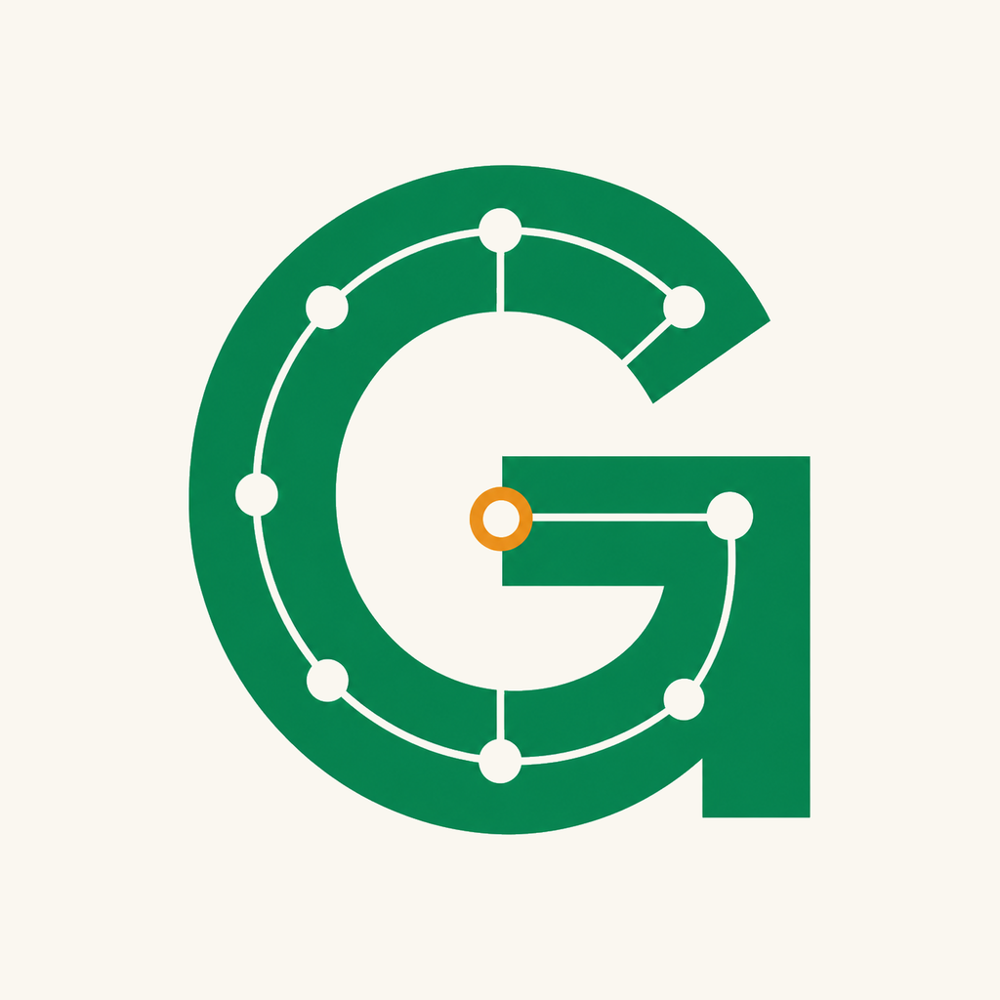

G Exam Study App
G検定 問題集
重要テーマを4択クイズで確認し、間違えた問題を復習できるG検定向け学習アプリです。

主な機能
- 分野別クイズ G検定で押さえたいテーマを分野ごとに学習できます。
- ランダム演習 短時間で複数分野を横断して確認できます。
- 復習リスト 間違えた問題を優先して解き直せます。
ご利用にあたって
本アプリは学習支援を目的としたクイズアプリです。収録問題は学習目的の サンプルであり、実際の試験問題や合格を保証するものではありません。
G Exam Study App
重要テーマを4択クイズで確認し、間違えた問題を復習できるG検定向け学習アプリです。

本アプリは学習支援を目的としたクイズアプリです。収録問題は学習目的の サンプルであり、実際の試験問題や合格を保証するものではありません。